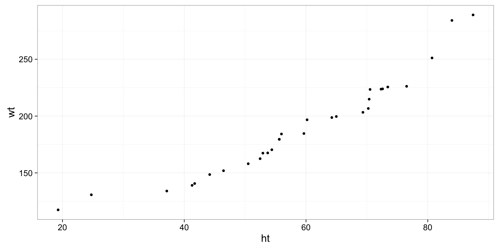
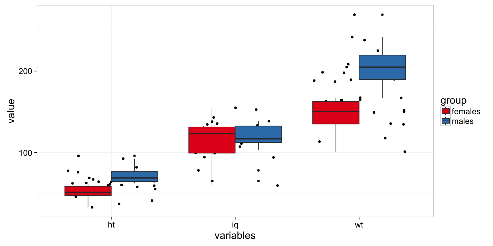
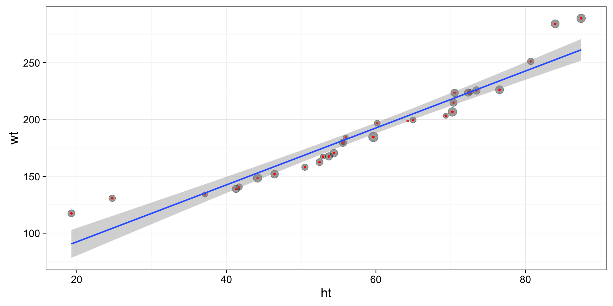
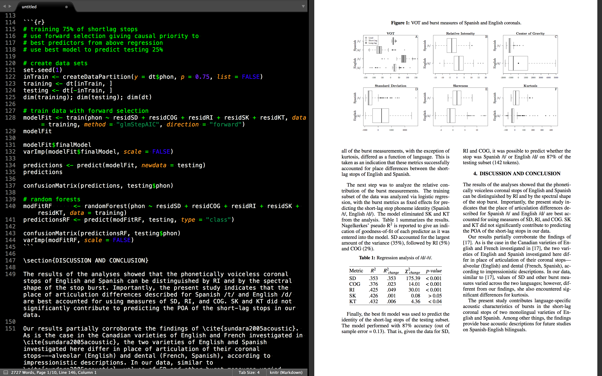

Data analysis in R
A gentle introduction
Joseph V. Casillas, PhD
Before we start...
RU ready?
- Download R
- Download RStudio
- Download scripts
- Follow the presentation www.jvcasillas.com/introR/
First things first...
- Open RStudio
- Open the file
introR.Rin RStudio (File > Open file) - Highlight lines 1-19
- Type
command+enter
1 ###############################################################################
2 # Intro to R #
3 # Joseph V. Casillas, PhD #
4 # 10/02/2016 #
5 ###############################################################################
6
7 # clean working directory
8 rm(list = ls(all = TRUE))
9
10 # Install required packages
11 packages <- c("ggplot2", "dplyr", "tidyr", "lme4", "devtools", "lingStuff")
12 if (length(setdiff(packages, rownames(installed.packages()))) > 0) {
13 install.packages(setdiff(packages, rownames(installed.packages())))
14 }
15
16 # Load packages
17 library(tidyr); library(dplyr); library(ggplot2); library(lme4);
18 library(devtools); library(lingStuff)
19
Outline

- What is R?
- Why should you use it?
- Object oriented programming
- Data structures
- Manipulating dataframes
- Data visualization
- Data analyses
- Reproducible research
- Extras
What is R?
What is R?


- R is a language and environment for statistical computing and graphics
- GNU project
R environment

Object oriented programming
Object oriented programming
[...] language model organized around objects rather than "actions" and data rather than logic.
- The console
- R as a calculator
- Scripting language and objects
The console

- Gross
- Unintuitive
- Unproductive
R as a calculator

- You can do simple arithmetic using the console
2 + 2
## [1] 4
4^2
## [1] 16
(12 * 15) / 2
## [1] 90
- Like using a ferrari to get the mail
Scripting language
R is a scripting language

- Write code in .R file
- Send code to the console by highlighting in and typing cmd + enter
- Open the script 'introR.R' (File > Open file) and send some code to the console!
Scripting language
Comment your code
- You can include comments in your code by placing # at the beginning
- This is important so that you remember what you did and why!
# This is a comment
2 + 2
## [1] 4
Scripting language
OOP uses objects
- Objects are variables saved into your computers memory
- You assign objects to variables using
<-
x <- 2
print(x)
## [1] 2
- You can then refer to and manipulate variables
x + 4
## [1] 6
Scripting language
Functions
- The way we get things done in R is via functions
- A function in a command that performs an operation
sum()mean()lm()
- Functions take arguements
sum(x)= calculate the sum of the values in the vector 'x'mean(x)= calculate the mean of the values in the vector 'x'lm(y ~ x)= fit a linear model ('y' as a function of 'x')
Rhas many, many functions- If you can't find one that does what you want, you can create it and share it in an R package (i.e.
lingStuff)
Data structures
Data structures
R uses several different types of data structures
We will focus on three
- Vectors
- Matrices
- Dataframes
Vectors
- A vector is a sequence of data elements of the same basic type
- They commonly include chars or numbers
x <- c(1, 2, 3)
y <- c(4, 5, 6)
z <- c('a', 'b', 'c')
print(x); print(y); print(z)
## [1] 1 2 3
## [1] 4 5 6
## [1] "a" "b" "c"
Vectors
We can perform operations on vectors
x <- c(1, 2, 3)
y <- c(4, 5, 6)
x + 1
## [1] 2 3 4
x + y
## [1] 5 7 9
... but they have to be the same type of vector
y + z
## Error in y + z: non-numeric argument to binary operator
Matrices


- A matrix is a two dimensional vector
matrix(1:10, nrow = 5, ncol = 2)
## [,1] [,2]
## [1,] 1 6
## [2,] 2 7
## [3,] 3 8
## [4,] 4 9
## [5,] 5 10
- For most purposes, a matrix is not very convenient
Dataframes
- A dataframe is a matrix with column names
testDF <- data.frame(x, y, z)
print(testDF)
## x y z
## 1 1 4 a
## 2 2 5 b
## 3 3 6 c
- R comes with some dataframes installed
- Try using the command
head()with the following dataframeshead(mtcars)head(USArrests)
head(mtcars); head(USArrests)
## mpg cyl disp hp drat wt qsec vs am gear carb
## Mazda RX4 21.0 6 160 110 3.90 2.620 16.46 0 1 4 4
## Mazda RX4 Wag 21.0 6 160 110 3.90 2.875 17.02 0 1 4 4
## Datsun 710 22.8 4 108 93 3.85 2.320 18.61 1 1 4 1
## Hornet 4 Drive 21.4 6 258 110 3.08 3.215 19.44 1 0 3 1
## Hornet Sportabout 18.7 8 360 175 3.15 3.440 17.02 0 0 3 2
## Valiant 18.1 6 225 105 2.76 3.460 20.22 1 0 3 1
## Murder Assault UrbanPop Rape
## Alabama 13.2 236 58 21.2
## Alaska 10.0 263 48 44.5
## Arizona 8.1 294 80 31.0
## Arkansas 8.8 190 50 19.5
## California 9.0 276 91 40.6
## Colorado 7.9 204 78 38.7
Manipulating dataframes
Manipulating dataframes
- This is probably the hardest thing you have to learn to do in R (when you first start)!
- We can refer to rows and columns inside a dataframe using brackets
[] - Let's create a data frame in order to practice
set.seed(1)
x <- seq(1:30)
g <- gl(n = 2, k = 15, length = 30, labels = c('females', 'males'))
y.iq <- rnorm(n = 30, mean = 115, sd = 25)
y.wt <- rnorm(n = 30, mean = 170, sd = 50)
y.ht <- rnorm(n = 30, mean = 60, sd = 15)
df <- data.frame(subj = x,
group = g,
iq = y.iq,
wt = sort(y.wt),
ht = sort(y.ht))
Manipulating dataframes
- Let's look at 'df' using the
head()function
head(df, n = 10)
## subj group iq wt ht
## 1 1 females 83.00503 117.4432 72.58193
## 2 2 females 76.66422 130.7212 80.70134
## 3 3 females 64.01063 134.0213 70.37594
## 4 4 females 89.37450 139.0162 76.52936
## 5 5 females 75.03665 140.6232 69.35115
## 6 6 females 106.38916 148.5338 54.38731
## 7 7 females 93.87176 151.9163 64.24166
## 8 8 females 75.91671 158.0517 44.18082
## 9 9 females 83.77371 162.5080 72.33028
## 10 10 females 61.82068 167.3675 50.50666
Manipulating dataframes
- What kind of variables does the dataframe have?
str(df)
## 'data.frame': 30 obs. of 5 variables:
## $ subj : int 1 2 3 4 5 6 7 8 9 10 ...
## $ group: Factor w/ 2 levels "females","males": 1 1 1 1 1 1 1 1 1 1 ...
## $ iq : num 119.2 110.4 92.8 128 108.1 ...
## $ wt : num 117 131 134 139 141 ...
## $ ht : num 72.6 80.7 70.4 76.5 69.4 ...
Manipulating dataframes
- How do we look at subsets of the dataframe? Bracket operators
df[1, ]
## subj group iq wt ht
## 1 1 females 119.1737 117.4432 72.58193
df[, 1]
## [1] 1 2 3 4 5 6 7 8 9 10 11 12 13 14 15 16 17 18 19 20 21 22 23
## [24] 24 25 26 27 28 29 30
- Show me the 10th row of the 3rd column
df[10, 3]
Manipulating dataframes
df[10, 3]
## [1] 89.75095
df[10:15, ]
## subj group iq wt ht
## 10 10 females 89.75095 167.3675 50.50666
## 11 11 females 128.35394 167.5636 46.45168
## 12 12 females 131.88419 170.3667 55.60011
## 13 13 females 124.63044 179.5391 37.13279
## 14 14 females 78.78856 179.5429 52.46047
## 15 15 females 89.28179 184.2407 24.73771
Manipulating dataframes
- We can also use levels of the categorical factor to subset and perform and operation on the result
- Give me the average IQ of just the males
mean(df[df$group == 'males', 'iq'])
## [1] 123.2026
Data visualization
ggplot2
ggplot2is a package that simplifies data visualization- 'Grammar of graphics'
- Princple components
- aesthetics (variables in your dataframe)
i.e. x, y, size, colour, shape - geoms (the type of elements in the plot)
i.e. points, boxplots, lines, etc.
- aesthetics (variables in your dataframe)
- Let's plot the data from the
dfdataframe
ggplot(df, aes(x = ht, y = wt)) +
geom_point()
ggplot2

ggplot
- Let's look at our dataframe
dfwith the categorical factorgroup
df %>%
gather(., key = variables, value = value, -subj, -group) %>%
ggplot(., aes(x = var, y = value, fill = group)) +
geom_jitter() +
geom_boxplot()
ggplot

Data analysis
Data analysis
- There are many packages created for R that make it possible to do a wide range of sophisticated analyses
- linear models, hierarchical (mixed effects) models, random forests, Bayesian models, etc.
- Most models use a function (i.e.
lm()) and the model is fit using a formula
lm(formula = wt ~ ht, data = df)
| Estimate | Std. Error | t value | Pr(>|t|) | |
|---|---|---|---|---|
| (Intercept) | 9.1925 | 5.9111 | 1.56 | 0.1311 |
| ht | 2.7159 | 0.0934 | 29.07 | 0.0000 |
Data analysis

Reproducible research
Reproducible research
- Scientific research must be reproducible
- Scientists are forgetful
- We need a workflow that facilitates reproducibility and helps us remember what we did
- Solution: RMarkdown
RMarkdown
- Combines R code and markdown
- Markdown is a plain-text formatting syntax designed to easily convert to HTML
- "Two plus two = 4."
RMarkdown
- Combines R code and markdown
- Markdown is a plain-text formatting syntax designed to easily convert to HTML
Two plus two = `r 2 + 2`.
RMarkdown
A more complicated (and common) example
- You come up with a brilliant idea, spend 1 year planning the design/getting funding/collecting data, spend a couple weeks analyzing the data, spend a few months preparing a manuscript, and 1 year waiting for reviews
- You get reviews
- "You need to run more participants"
- "You need to change the analysis"
- "You need to quit your job"
- Problems
- You go back to your project and don't remember anything
- Large margin for error
- Not reproducible
RMarkdown
.Rmd files
- Keep your code and manuscript together
- Outputs to .pdf, .doc, or .html (no more copy/paste from console to word)

Extras
Extras
- Presentations
- Shiny
- Webpages
Presentations
.Rmdcan generate HTML presentations- This presentation is an example
slidifypackage (link) for more information
Ex.
## Presentations
- **.Rmd** can generate HTML presentations
- This presentation is an example
- **slidify** package ([link](http://slidify.org)) for more information
### Ex.
Shiny
Webpages
- .Rmd can generate HTML files
- www.jvcasillas.com is an example
- More info here
Summing up
Conclusion
- R is free, extensible, and powerful
- The learning curve is rather steep, be patient
- Once you understand subsetting the rest is easy (easier?)
Thank you

- Slides on github
- Scripts available here
- Email me with questions, comments, suggestions
joseph.casillas@rutgers.edu